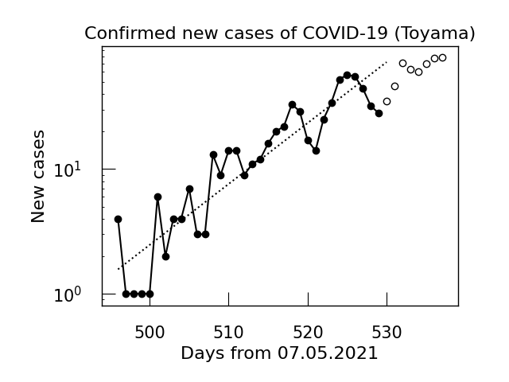

せっかくの夏休み，無駄にしたくないと思ったので，日記をつけようと思います．毎日，「今日はこれができるようになった」と言えるような日々を送りたいです．
2021/08/17
お盆休みが開けたようで，今日がお盆最終日の検査結果がでるくらいで 県の感染者数の動向に注目していたが，この通り．以後，どうなるか．やすみだったこともふまえると，以前の 指数関数のフィットに乗ってきそうな予感もするが...． 
大学が開いていたので，生協で買い物をしてきた．あたらしいLinuxの教科書と， 以前に注文していたSchwartzのQFTの本を買った．それと，キーボードを買った．
さて，勉強の方だが，とりあえず田崎統計力学の5章を一気に読み切った． 二原子分子理想気体の比熱について学んだ．田崎の脚注に実験値が理科年表にあるとされていたので， 実際の実験データと比較して，回転からの寄与が大きく，振動からの寄与は小さいということもどこかでじっくりやりたい． いい加減他の勉強もやらなければいけないし，田崎の復習もしなければいけない．
2021/08/16
統計力学でエネルギー等分配則をやったのが面白かったですね．Hamiltonian中の自由粒子の項と 調和振動子の項に \(k_{\text{B}}T/2\) 単位でエネルギーが分配されるのが面白い．
田崎統計力学の図5.9，Maxwell-Boltzmann分布のグラフだが，明記されている式(5.6.6)じゃ足りなくて，\(\|\vec{v}\|\)がとる状態数，
すなわち速度空間での半径\(\|\vec{v}\|\)の球殻について積分しなければいけない．それでいちおうプロットするとこんな感じ．
2021/08/15
昨日に引き続きCEED5thに参加した．印象に残っているのはArcの 話で，虹に似ている現象だが，虹は水滴を球として，そのなかで反射とかを考えるのに対し， Arcでは氷晶が六角中の形をしていることから，見られる現象として違うらしい．ミクロな違いがマクロな現象に現れるのは 統計物理みがあるし，統計力学的な手法で何かわからないかなと漠然と思ったり．講演者の方がつくっている解説ベージもある．
それから，HTMLで画像をpngファイルへのリンクをとばすのではなく，ページにembedするようにした．width 300くらいがちょうど良さそう？
2021/08/14
今日も磁性体への統計力学の応用について．Heisenberg交換相互作用を考えたとき，エネルギー固有値は \[E_\vec{\sigma}=-J\sum_{i=1}^{N/2}\sigma_{2i-1}\sigma_{2i}+\sum_{i=1}^{N}\mu_0H\sigma_{i}\] となるが，この係数の\(J\)の正負で磁化率の振る舞いが変わるのが面白かった．
 |
 |
前期にやっていた，銅の比熱データのへのEinstein modelからのフィットについて， 高温でずれる原因は銅の融点付近（ちょうど1357[K]くらい）だからではないかとtさんに指摘を頂いた．
2021/08/13
磁性体の統計力学を勉強した．spinがたくさん独立にあるとして， 分配関数につっこむと，常磁性体の磁化が再現されることをみた．統計力学恐るべし．
いちばんすごいと思ったのは，断熱消磁．\(N\)-spin系の分配関数から， エントロピーを計算して，断熱準静操作でエントロピーが不変であることから，その表式内の \(H/T\)が一定となる．これを用いて，磁場を変えることで低温が実現できるらしい．
ちょうどこれを書いているときに，rくんと少し議論ができて，磁場の変化を利用して低温にするのは 一般に磁気冷凍ということを教えてもらった．
2021/08/12
朝から熱力学のゼミに参加したが，結構忘れているので復習しなければなと．（そして朝は眠い...．）
ここ最近，統計力学の勉強をしているが，熱力学の関係式を忘れていたり，しっかり自分で手を動かせるようにしなければいけない．
2021/08/11
今日はUbuntuの環境構築で一日が終わった感じだ．TeXやpythonをいれたり，VScodeとGitHubの連携をしたりして， 以前とほぼ同様の環境に戻った気がする．さて，あとはSlackとメール関係かな．
2021/08/10
ついに，Windowsを破壊してUbuntuをインストールした．このツイートに実況を吊るしている． 使っているPCがSurface Laptop2ということで， それが悪さをしてキーボードが打てなくなったが，mさんやpさんの助けを借りたりして，翌日の午前四時に解決した．そのときのツイートがこれ．
2021/08/9
Eq.\eqref{number_of_state}について，粒子間相互作用のポテンシャルにある条件を入れたときは， 厳密に状態数がそのようにふるまうらしい．式をみるとわかるように，言わんとすることは体積を増やすと，状態数が爆発的にふえるということで，状態数勘定の時に これが効いてきそう．ただし，一般の状況については証明はなくて，健全な熱力学的な系ならこれは満たすだろうと信じられている，といった具合．
この条件といい，canonical分布のガバガバな導出といい，ある程度具体例を見た方がよさそう．ということで， 具体例として，2準位系をcanonical分布で扱うなどをした．
2021/08/8
uさんにBibTeXを教わった．とりあえずLaTeXの作業するフォルダの一番上に .bibファイルを置いて，絶対パスを通したけど， 調べる限りTeXLiveのどこかにおいていろいろやった方がよさげ(というか， ネットで調べたらその方法しか出てこない)ので時間があればそれをやりたい．(それから，はやくLinuxに乗り換えねば...．)
2021/08/7
canonical分布の導出を追った．春にやったときは，このあたりの近似に近似を重ねる式変形の意義やモチベーションがわからなくて 面白みが分からなかったけど，前期の物性の授業でEinstein分布を扱って 具体例に触れてモチベーションを得た．canonical分布は着目する系と熱浴全体として micro canonical分布に従うとして，熱浴のほうをいじいじしていく感じ．
「熱力学的に健全である」ことの条件 \[\Omega_{V,N}(E)\sim\exp(V\sigma(\epsilon,\rho)) \tag{1}\label{number_of_state}\] が導出に関わってくるが，よくわかっていないので，そのあたりを勉強しよう．
{kind=link}